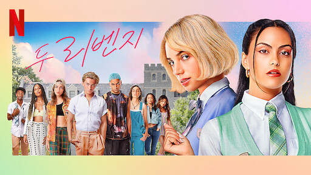

괴물
2021 | 15+ | 시즌 1개 | 스릴러
서울 근교 마을. 20년 전의 강력 사건이 미제로 묻힌 곳. 그런데 유사 사건이 터지며 마을이 술렁인다. 괴물이 깨어난 걸까. 각자의 이유로 사건에 얽힌 두 경찰이 위험한 사냥에 뛰어든다.
주연 : 신하균, 여진구, 최대훈
크리에이터 : 심나연, 김수진
무제한으로 즐기세요
영상
| 괴물
예고편: 괴물
회차
| 괴물
괴물
공개일 : 2021
서울 근교 마을. 20년 전의 강력 사건이 미제로 묻힌 곳. 그런데 유사 사건이 터지며 마을이 술렁인다. 괴물이
깨어난 걸까. 각자의 이유로 사건에 얽힌 두 경찰이 위험한 사냥에 뛰어든다.
깨어난 걸까. 각자의 이유로 사건에 얽힌 두 경찰이 위험한 사냥에 뛰어든다.
-
1. 1화
64분서울 근교의 파출소. 이곳에 어울리지 않는 엘리트 경위 한주원이 부임을 온다. 그의 파트너는 괴팍하기로 소문난 이동식 경사. 전혀 다른 두 사람, 시작부터 마찰을 빚는다. -
2. 2화
67분백골 사체라니. 평화롭던 마을과 파출소는 술렁이기 시작하고 불길한 가능성들이 스멀스멀 올라온다. 참혹한 기억에 빠진 동식, 심란한 마음을 누르고 민정을 찾으러 나선다. -
3. 3화
63분20년 전 기억을 부르는 또 다른 사건으로 마을은 충격에 휩싸인다. 민정의 행방에 대한 수사가 진행되는 가운데 수상하게 행동하는 동식. 혹시 그가? 주원의 의심이 깊어간다. -
4. 4화
61분탐문 수사를 받는 동식. 느긋한 그의 태도에 주원은 마음이 조급해진다. 결정적 증거를 찾아야 해! 경찰이 정육점을 압수 수색하자 분노하는 재이. 과거가 또 반복되는 건가. -
5. 5화
64분주원이 터뜨린 기자회견의 여파는 생각과 다른 쪽으로 흐른다. 문주시 개발 추진 행사에 이용된 진묵. 분개한 동식이 현장으로 달려간다. 그는 누굴 감싸려 안간힘을 쓰는가. -
6. 6화
62분주원에게 비공식 수사를 부탁하는 진묵. 주원은 바로 받아들이지만 정작 동식의 반응은 미지근하다. 조카 같은 민정이 아니었던가. 해원은 사건에서 정제를 떼놓으려 애쓴다. -
7. 7화
74분그는 그렇게 괴물이 되었나. 동식의 과거와 현재를 알 리 없는 주원은 집요하게 동식을 몰아간다. 민정의 두 번째 문자가 도착하자 당황하는 동식. 누군가 진실을 알고 있다. -

8. 8화
72분범인의 정체에 마을은 충격에 빠진다. 그가 연쇄 살인마인가. 동식과 주원에게만 진술하겠다는 범인. 그 의중은 무엇일까. 한편 기환은 배후에서 사건 처리 방식을 지시한다. -
9. 9화
60분마을은 일상으로 돌아갔지만 동식의 절박함은 그대로다. 오래된 비디오를 보며 단서를 찾는 그. 도대체 유연은 어디에 있는가. 주원과 재이는 석 달 만에 제자리로 돌아온다. -
10. 10화
62분그날 밤 재이는 누굴 봤을까. 살인범에게 낚싯줄을 준 자에 대한 의문이 증폭하는 가운데 동식은 범인을 확신한다. 주원을 추궁하러 간 동식. 하지만 주원은 동식을 도발한다. -
11. 11화
62분비극적 죽음을 애도하는 동식과 파출소 직원들. 범인은 누구인가. 그를 찾으면 다른 살인의 배후도 밝혀질까. 사건을 함께 추적하는 동식과 주원, 뜻밖의 두 인물에 주목한다. -
12. 12화
67분21년 전 그날 밤 일을 떠올리려 애쓰는 정제. 정말 기억을 못 하는 걸까, 아니면 그런 척하는 걸까. 동식과 주원이 정제를 압박하자, 지옥의 문이 서서히 열리기 시작한다. -
13. 13화
61분기환의 연결고리를 추적해가는 형사들. 모든 선이 그를 향하는 건 우연인가. 여동생 사건을 되짚어 보는 동식, 목표물에 조준할 준비를 하며 주원에게 중요한 질문을 던진다. -
14. 14화
61분61분 주원을 긴급 체포한 동식. 그 의도는 뭘까. 정제는 과거 사건에 대해 창진을 추궁하고, 그 배후에서 동식과 주원이 서서히 행동을 개시한다. 괴물을 막다른 길로 내몰기 위해. -
15. 15화
61분잔혹한 진실을 마주한 주원이 동식 앞에서 무너진다. 동식은 그를 어디까지 믿어야 할까. 덫을 놔 괴물을 잡겠다는 주원. 하지만 그땐 몰랐다. 누가 누구의 덫에 걸리게 될지. -
16. 16화
79분또 다른 살인의 현장. 그곳엔 함정이 묻혀있었다. 손을 맞잡은 주원과 동식, 21년간 쌓인 거짓을 차례로 허물며 진실을 향해 돌진한다. 죄지은 모든 이가 그 죗값을 치르도록.
상세 정보
오프라인 시청
장르
영화 특징:
음성/더빙
자막
저장 기능은 광고 없는
멤버십에서만 이용 가능합니다.
멤버십에서만 이용 가능합니다.
범죄 시리즈, 스릴러 시리즈, 한국 드라마
어두운, 긴장감 넘치는
English, Korean - Audiio Description,
Korean [Original]
Korean [Original]
English,English,Japanese,Korean
출연
신하균
최진호
최진호
여진구
최대훈
최성은
천호진
함께 시청된 콘텐츠



공개 임박
메니페스트
사냥개들
바비의 인어 공주 이야기
레지던트 이불 2
리키줌
비행기가 착륙하니 세계는 불가사의하게도
이미 수년이 지나있고, 시간의 흐름이
캄승객들만 비껴간 것 같다. 도착한 승객들은
기이한 새로운 현실과 마주한다.
이미 수년이 지나있고, 시간의 흐름이
캄승객들만 비껴간 것 같다. 도착한 승객들은
기이한 새로운 현실과 마주한다.
두 청년 복서가 선한 대부업자와 한뜻으로
뭉친다. 돈 때문에 절박한 약자들을 먹잇감
삼는 악랄한 사채업자에 대적하기 위해.
뭉친다. 돈 때문에 절박한 약자들을 먹잇감
삼는 악랄한 사채업자에 대적하기 위해.
자신이 인어라는 사실을 알게 된 소녀 멀리아.
서핑 챔피언인 멀리아는 돌고래의 도움을 받아
오세아나의 여왕인 엄마를 구해야 한다!
서핑 챔피언인 멀리아는 돌고래의 도움을 받아
오세아나의 여왕인 엄마를 구해야 한다!
죽음의 바이러스가 확산되자 봉쇄에 들어간
라쿤 시티. 좀비와 함께 그곳에 갇힌 앨리스와
엘리트 군단은 새로운 악의 등장을 마주한다.
라쿤 시티. 좀비와 함께 그곳에 갇힌 앨리스와
엘리트 군단은 새로운 악의 등장을 마주한다.
리키 줌과 단짝 바이크 친구들이 바이크 마을
휠포드를 쌩쌩 달려요. 구조 임무도 해내고
빠르게 움직이는 스턴트도 배운답니다.
우리도 함께 신나게 달려볼까요!
휠포드를 쌩쌩 달려요. 구조 임무도 해내고
빠르게 움직이는 스턴트도 배운답니다.
우리도 함께 신나게 달려볼까요!
아놀드
러브 데스티나: 더 무비
뷰티풀 라이프
보디빌딩 챔피언부터 시작해 할리우드
아이콘을 거쳐 정치인이 되기까지, 아놀드
슈워제네거의 다각적인 삶과 커리어를 따라가는
내밀한 다큐시리즈.
아이콘을 거쳐 정치인이 되기까지, 아놀드
슈워제네거의 다각적인 삶과 커리어를 따라가는
내밀한 다큐시리즈.
다른 생에서 사랑했던 여인을 꿈에서 본 한
남자. 그녀를 다시 만나게 될 운명이라고
믿는다. 하지만 정체를 알 수 없는 시간 여행자가
나타나 그의 계획을 방해한다.
남자. 그녀를 다시 만나게 될 운명이라고
믿는다. 하지만 정체를 알 수 없는 시간 여행자가
나타나 그의 계획을 방해한다.
남다른 재능을 숨기고 살던 청년 어부가 어느
날 한 음악 프로듀서의 눈길을 끈다. 그의
앞에서 손짓하는 스타덤과 사랑. 그는 이 새로운
길에 뛰어들 준비가 되었을까?
날 한 음악 프로듀서의 눈길을 끈다. 그의
앞에서 손짓하는 스타덤과 사랑. 그는 이 새로운
길에 뛰어들 준비가 되었을까?